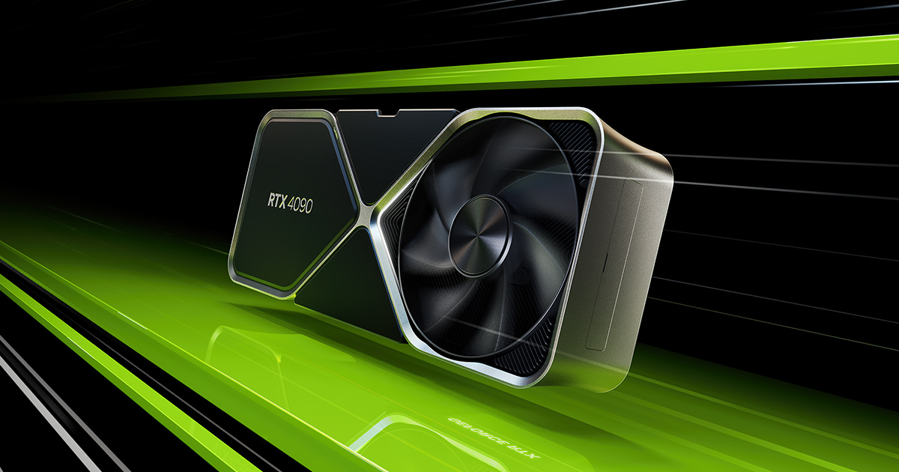

Nova placa de video Geforce RTX 4090 chega ao mercado.

Descrição
RTX 4090 e RTX 3090 são duas placas de vídeo top de linha da Nvidia. Lançada em 2022, a 4090 veio com objetivo de substituir a RTX 3090 no mercado. A nova GPU da Nvidia vem com DLSS de terceira geração, além de arquitetura mais eficiente e capacidade de processamento que pode superar em mais de 50% o que a RTX 3090 entrega em títulos exigentes, como Cyberpunk 2077.
A RTX 4090 é formada por 16.384 núcleos CUDA, pode trabalhar com clock base de 2.235 MHz e atingir um turbo de 2.520 MHz. O processador da 4090 tem ainda 512 núcleos Tensor, usados em apps de IA e no DLSS, além de 128 núcleos RT para Ray Tracing.
Saiba mais
Fique por dentro: Rapper americano chega ao Fortnite .
Loud é campeã do mundo de Valorant